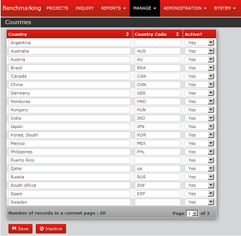

Manage ► Countries
Module Name: Country
Description: Manage Countries
Roles:
Table: Country
Fields: country_id, region_id, country_name, country_code, is_active
Program Flow:
Click  from Menu, under the sub-menu, select Countries to open the page.
from Menu, under the sub-menu, select Countries to open the page.

Clicking Delete icon () enables the user to delete the selected item(s).
• Results after clicking the link Printable Version

Admin ► Closure Checklist Categories ►{# / #} or Checklist Items for Symptom

Clicking Delete icon () enables the user to delete the selected item(s).
• Results after clicking the link Printable Version

Manage ► Regions & Countries
Module Name: Regions & Countries
Description : Manage Regions & Countries
Roles :
Table : Regions & Countries
Fields : region_id, region_name, region_code, is_active
Program Flow:
1. Click from Menu, under the sub-menu, select Regions & Countries to open the page.

2. To view page for active countries please click the numbers under the Column Countries.

3. Click SAVE Button  to save your changes/updates.
to save your changes/updates.

4. Click INACTIVE Button  to view Inactive Regions
to view Inactive Regions

5. Click SAVE Button to save your changes/updates.
Manage ► Plants per Countries
Module Name: Plants per Countries
Description: Manage Plants per Countries
Roles:
Table: Plants per Countries
Fields: plant_id, country_id, plant_name, is_active
Program Flow:
1.Click from Menu, to view the sub-menu.

2.Under the sub-menu find Plants per Countries then select to open.

3.Click  to view the save data.
to view the save data.

4.To find the Countries you want just type on the Box beside the word Country.

5.Click to view the save data.

6.To add data just click  then add data on blank rows then click save.
then add data on blank rows then click save.

6.User can remove some data that they don't want to appear just change in  from YES to NO, then click .
from YES to NO, then click .

7.To view the data that been remove just click the to return the data just change from NO to YES, then click.

Manage ► Vehicle types
Module Name: Vehicle types
Description: Manage Vehicle types
Table:
Mandatory:
Roles:
Fields: vehicle_type_id, vehicle_type_name, is_active
Program Flow:
1.Click from Menu, to view the sub-menu.

2.Under the sub-menu find Vehicle types then select to open.

3.To add new information to the page, click to view pop-up table. now the User can add data information, After adding just click button.

4.User can remove some data that they don't want to appear just change in from YES to NO, then click .

5.User can view the data that been remove just click the button.

6.To return the inactive data just change in from NO to YES, then click .

Manage ►Vehicle Features
Module Name: Vehicle Features
Description: Manage Vehicle Features
Table:
Mandatory:
Roles:
Fields: features_id, pfeatures_id, seq_no, features_name, features_desc, is_active
Program Flow:
1.Click from Menu, to view the sub-menu.

2.Under the sub-menu find Vehicle Features then select to open.

3.Under the Sub-feature click the number to open.

4.User can add data to the sub-feature, after adding click save.

5.If the User want to add another sub-feature click the number to open.

6.User can add data to the sub-feature, after adding click save.

6.Just click  to exit.
to exit.
Manage ►OEM
Module Name: OEM
Description: Manage Oem & Vehicle Models
Table:
Mandatory:
Roles:
Fields: oem_id, oem_name, oem_sname, is_active
Program Flow:
1.Click from Menu, to view the sub-menu.

2.Under the sub-menu find Oem & Vehicle Models then select to open.

Manage ►Target Market
Module Name: Target Market
Description: Manage Target Market
Table:
Mandatory:
Roles:
Fields: market_id, market_name, is_active
Program Flow:
1.Click from Menu, to view the sub-menu.

2.Under the sub-menu find Target Market then select to open.

Manage ►Properties & Attributes
Module Name: Properties & Attributes
Description: Manage Properties & Attributes
Table:
Mandatory:
Roles:
Fields: property_id, attribute_id
Program Flow:
1.Click from Menu, to view the sub-menu.

2.Under the sub-menu find Properties & Attributes then select to open.

Manage ► Specifications
Module Name: Specification
Description: Manage Specification
Table:
Mandatory:
Roles:
Fields: specs_id, specs_name, seq_no, is_active
Program Flow:
1.Click from Menu, to view the sub-menu.

2.Under the sub-menu find Specifications then select to open.

3.Enable the user to add data in each rows.
4.User can save there data just click .
5.User can remove some data that they don't want to appear just change in from YES to NO, then click .

6.User can view the data that been remove just click the button.

7.To return the inactive data just change in from NO to YES, then click .

8.In the Specification page, under  click the numbers below to view some informations.
click the numbers below to view some informations.

9.Now the user can add some data by checking the box at the side, if your done selecting, you can save your data by clicking button.

10.To remove some data just change the Menu from YES to NO, then click .

11.Under the column  click the list icon
click the list icon  to pop-up new information table.
to pop-up new information table.

12.Enable the user to add or remove data from Cutsheet information.

Admin ► Failure Modes

Clicking Delete icon () enables the user to delete the selected item(s).
• Results after clicking the link Printable Version

Manage ► Process Statuses
Module Name: Process Statuses
Description: Manage Process Statuses
Table:
Mandatory:
Roles:
Fields: status_id, status_name, color_code, color_name, seq_no, is_edit, is_active
Program Flow:
1.Click from Menu, to view the Sub-menu.

2.Under the sub-menu find Process Statuses then select to open

3.The user is now ready to add some informations.
4.To add some informations just type in the blank space, if your done adding, just click button.
Admin ► Plants

• Results after clicking the link Printable Version

Admin ► Plants ► Detail

Admin ► Plants ► Users

Clicking Delete icon () enables the user to delete the selected item(s).
Admin ► Plants ► Mfg Areas

Clicking Delete icon () enables the user to delete the selected item(s).
Admin ► Plants ► Products

Clicking Delete icon () enables the user to delete the selected item(s).
Admin ► Plants ► Technologies

Clicking Delete icon () enables the user to delete the selected item(s).
Admin ► Plants ► Written Concern Forecast

Admin ► PR Severity

Clicking Delete icon () enables the user to delete the selected item(s).
• Results after clicking the link Printable Version

Admin ► Process by Concern Category

Clicking Delete icon () enables the user to delete the selected item(s).
• Results after clicking the link Printable Version

Admin ► Process by Concern Category ► Sub Process

Clicking Delete icon () enables the user to delete the selected item(s).
• Results after clicking the link Printable Version

Admin ► Root Cause Category (Escape)

Clicking Delete icon () enables the user to delete the selected item(s).
• Results after clicking the link Printable Version

Admin ► Root Cause Category (Occurrence)

Clicking Delete icon () enables the user to delete the selected item(s).
• Results after clicking the link Printable Version

Admin ► Supplier Codes

Clicking Delete icon () enables the user to delete the selected item(s).
• Results after clicking the link Printable Version

Admin ► Symptom Category

Clicking Delete icon () enables the user to delete the selected item(s).
• Results after clicking the link Printable Version

Admin ► Team Roles

Clicking Delete icon () enables the user to delete the selected item(s).
• Results after clicking the link Printable Version

Admin ► Types

Clicking Delete icon () enables the user to delete the selected item(s).
• Results after clicking the link Printable Version